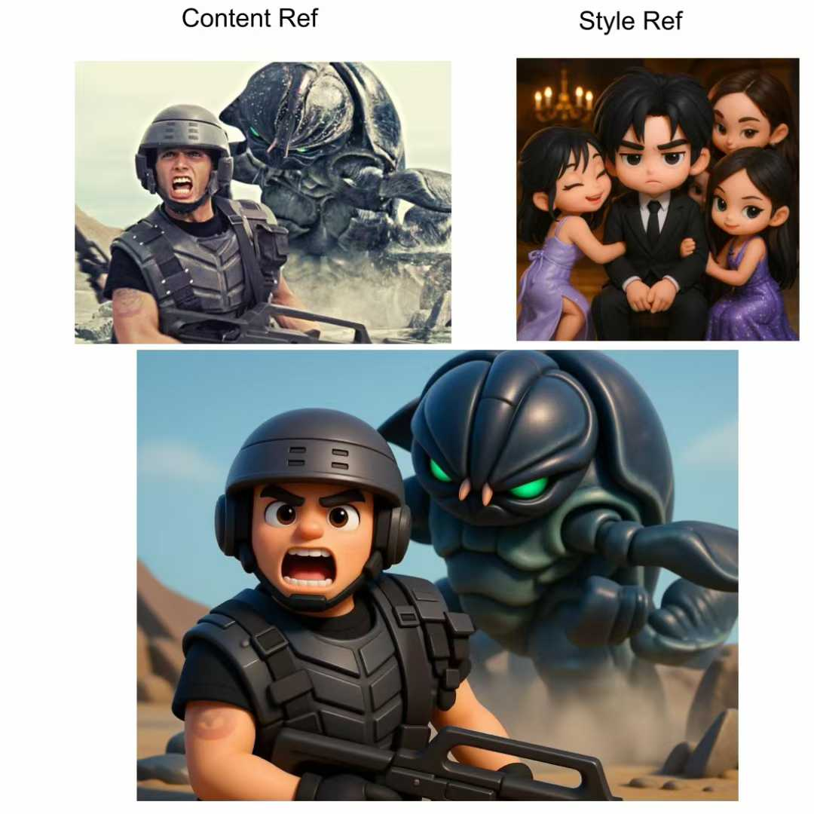

Haibin Huang
I recently joined TeleAI as a Principal Research Scientist and Research Manager, leading research efforts for Multi-Modal Generative AI. Previously, I served as a Generative AI Researcher at ByteDance, Staff Research Scientist at Kuaishou Technology, and Research Scientist at Megvii Research.
I hold a Ph.D. in Computer Science from the University of Massachusetts Amherst, where I worked with Prof. Evangelos Kalogerakis and Prof. Rui Wang in the Computer Graphics Research Group. I earned my bachelor's and master's degrees from the Department of Mathematics at Zhejiang University.
My research is dedicated to the analysis and creation of visual content through the integration of computer vision, computer graphics, and machine learning. I aim to devise techniques that simplify the creation and manipulation of digital content, thereby making these processes more user-friendly and accessible.
-
 July 2025 - PresentPrincipal Research Scientist
July 2025 - PresentPrincipal Research Scientist -
 March 2024 - July 2025Researcher of Generative AI
March 2024 - July 2025Researcher of Generative AI -
 Nov 2019 - March 2024Senior Staff Research Scientist
Nov 2019 - March 2024Senior Staff Research Scientist -
 Oct 2017 - Nov 2019Research Scientist
Oct 2017 - Nov 2019Research Scientist
- 
-

-

-

-

Editorial Services
- Associate Editor: The Visual Computer (2022-Present)
Program Committee
- SIGGRAPH Technical Papers Committee 2025
- SIGGRAPH Asia Technical Communications and Posters 2024, 2025
- Eurographics Short Papers 2024, 2025
- Computational Visual Media (CVM) 2023 - 2026
- Shape Modeling International (SMI) 2020 - 2025